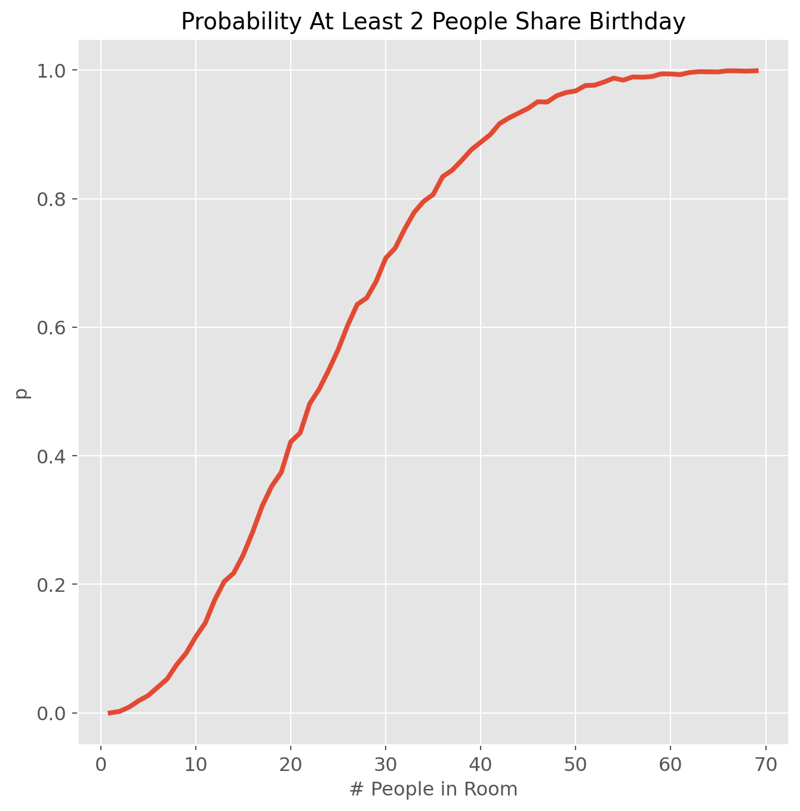
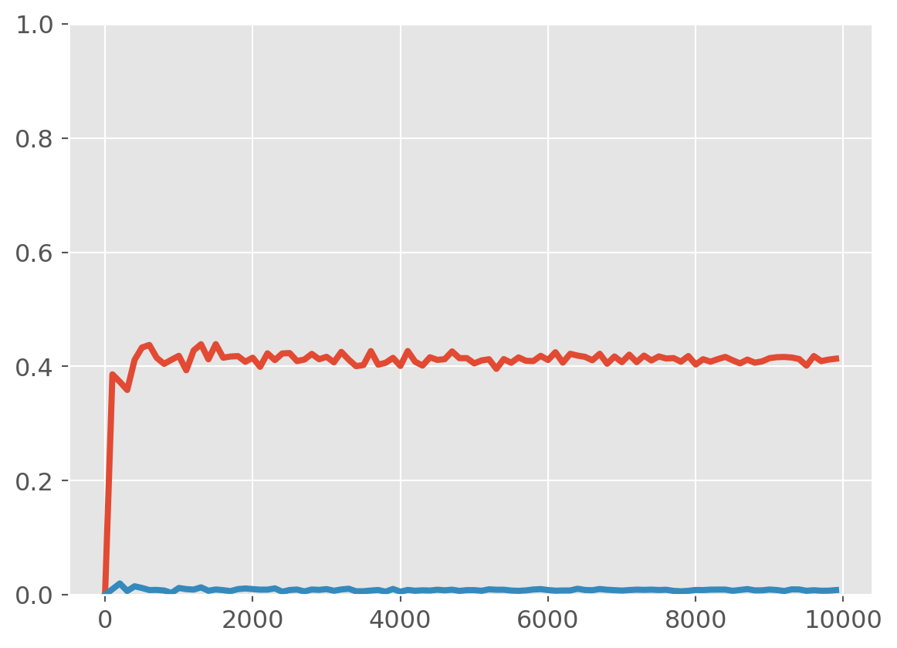
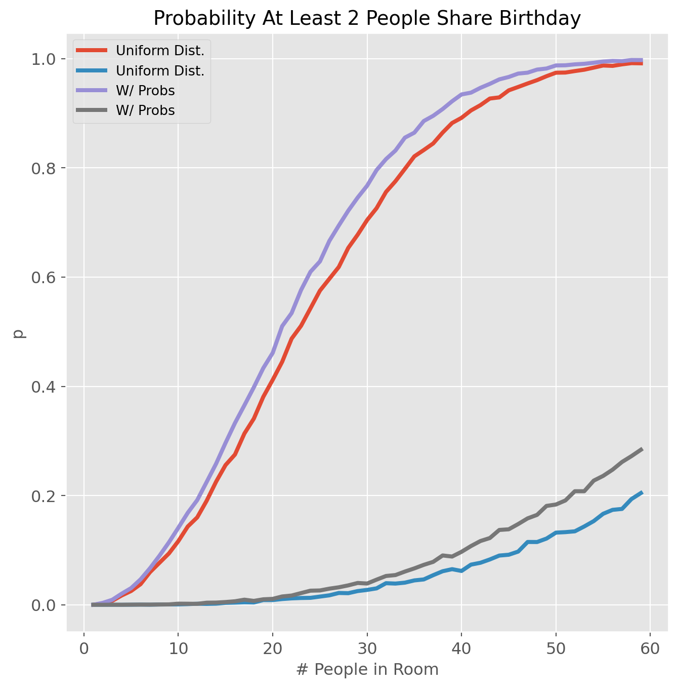

Solution Assuming Uniform Distribution of Birthdays
Assume all birthdays are equally likely (ie a uniform distribution from 1 to 365). We can sample from this distribution in python using numpy.random.randint.
For a given number of people in the room (N_in_room), draw a random sample of size N_in_room with replacement and check if any values occur more than once (i’ll use the handy Counter function from the collections module to count the number of times each value occurs).
Repeat this sampling process many times, then calculate the percent of times we get at least one duplicate; this is interpreted as the probability of getting at least one match for that room size.
Repeat the above process for different N_in_room values, and plot the probabilities versus N_in_room.
Code
import pandas as pdimport numpy as npnp.set_printoptions(suppress=True)import matplotlib.pyplot as plt%matplotlib inlinefrom collections import Counterimport seaborn as sns# make plots look niceplt.rcParams['font.size'] =14plt.rcParams['axes.labelsize'] ='large'plt.rcParams['xtick.labelsize'] ='large'plt.rcParams['ytick.labelsize'] ='large'plt.rcParams['lines.linewidth'] =3plt.style.use('ggplot')
Code
def prob_shared_birthday(N_in_room, N_simulations=5000, probs=None):''' Simulate the 'Birthday Puzzle Paradox' INPUT N_in_room (integer) : Number of People in room N_simulations (integer)(optional) : Number of Simulations to run (default = 5000) probs (numpy array)(optional): Array of probabilities for each yday (1-365). Defaults to 'None' (uniform probability distribution) RETURNS (p_gte2, p_gte3) (tuple of floats) : Probabilites of >=2, >=3 people sharing birthdays ''' n_gte2 = [] n_gte3 = [] possible_ydays = np.arange(1,366)for _ inrange(N_simulations): x = np.random.choice(possible_ydays, size = N_in_room, replace=True, p=probs) vals = np.array(list(Counter(x).values())) n_gte2.append(np.sum(vals>=2)) n_gte3.append(np.sum(vals>=3)) p_gte2 = np.mean(np.array(n_gte2)>0) p_gte3 = np.mean(np.array(n_gte3)>0)return (p_gte2, p_gte3)
fig, ax = plt.subplots(1, figsize=(8,8))ax.plot(list(range(1,70)), p, linewidth=3)ax.set_xlabel('# People in Room')ax.set_ylabel('p')ax.set_title('Probability At Least 2 People Share Birthday')plt.show()

Code
prob_shared_birthday(87)
(1.0, 0.5006)
How many simulations does it take for probability to converge? We’ll check for the 23 person room.
Code
p=[]N_in_room =20Nsims =list(range(1,10000, 100))for N_simulations in Nsims: p.append(prob_shared_birthday(N_in_room,N_simulations))fig,ax = plt.subplots(1)ax.plot(Nsims,p)ax.set_ylim(0,1)
(0.0, 1.0)

Solution Using Actual Probabilities of Birth Days
Above we assumed that all birthdays were equally likely; but this is not the case in real life. - http://thedailyviz.com/2016/09/17/how-common-is-your-birthday-dailyviz/ - http://www.vizwiz.com/2012/05/how-common-is-your-birthday-find-out.html - https://github.com/fivethirtyeight/data/tree/master/births
# drop leap yearsdf_births = df_births[df_births['leap_year']==False]#df_births['year'].value_counts()df_births.drop('leap_year', axis=1, inplace=True)df_births.head()
year
month
day
births
date
yearday
366
2001
1
1
7663
2001-01-01
1
367
2001
1
2
10635
2001-01-02
2
368
2001
1
3
12449
2001-01-03
3
369
2001
1
4
12678
2001-01-04
4
370
2001
1
5
12647
2001-01-05
5
Code
df2 = df_births.groupby(['month','day']).sum().reset_index()fig,ax = plt.subplots(1, figsize=(14,8))sns.heatmap(df2.pivot('month','day','births'), ax=ax)ax.invert_yaxis()ax.set_xlabel('Day of Month')ax.set_ylabel('Month')ax.set_title('Number of Births Vs. Month and Day')plt.show()
fig, ax = plt.subplots(1, figsize=(8,8))ax.plot(list(range(1,60)), p1, linewidth=3, label='Uniform Dist.')ax.plot(list(range(1,60)), p2, linewidth=3, label='W/ Probs')ax.set_xlabel('# People in Room')ax.set_ylabel('p')ax.legend()ax.set_title('Probability At Least 2 People Share Birthday')plt.show()

Session Info
sessionInfo()
Source Code
---title: "The Birthday Puzzle Paradox"image: cake.jpgdate: "2023-06-22"categories: [python, probability]format: html: code-link: true code-fold: showjupyter: python3draft: true---## Introduction[github repo](https://github.com/andypicke/Birthday-Puzzle-Paradox)If a room contains N people, what is the probability that at least 2 people will share the same birthday?- [Birthday_problem](https://en.wikipedia.org/wiki/Birthday_problem)- # Solution Assuming Uniform Distribution of Birthdays- Assume all birthdays are equally likely (ie a uniform distribution from 1 to 365). We can sample from this distribution in python using *numpy.random.randint*.- For a given number of people in the room (*N_in_room*), draw a random sample of size *N_in_room* with replacement and check if any values occur more than once (i'll use the handy *Counter* function from the *collections* module to count the number of times each value occurs).- Repeat this sampling process many times, then calculate the percent of times we get at least one duplicate; this is interpreted as the probability of getting at least one match for that room size.- Repeat the above process for different *N_in_room* values, and plot the probabilities versus *N_in_room*.```{python}import pandas as pdimport numpy as npnp.set_printoptions(suppress=True)import matplotlib.pyplot as plt%matplotlib inlinefrom collections import Counterimport seaborn as sns# make plots look niceplt.rcParams['font.size'] =14plt.rcParams['axes.labelsize'] ='large'plt.rcParams['xtick.labelsize'] ='large'plt.rcParams['ytick.labelsize'] ='large'plt.rcParams['lines.linewidth'] =3plt.style.use('ggplot')``````{python}def prob_shared_birthday(N_in_room, N_simulations=5000, probs=None):''' Simulate the 'Birthday Puzzle Paradox' INPUT N_in_room (integer) : Number of People in room N_simulations (integer)(optional) : Number of Simulations to run (default = 5000) probs (numpy array)(optional): Array of probabilities for each yday (1-365). Defaults to 'None' (uniform probability distribution) RETURNS (p_gte2, p_gte3) (tuple of floats) : Probabilites of >=2, >=3 people sharing birthdays ''' n_gte2 = [] n_gte3 = [] possible_ydays = np.arange(1,366)for _ inrange(N_simulations): x = np.random.choice(possible_ydays, size = N_in_room, replace=True, p=probs) vals = np.array(list(Counter(x).values())) n_gte2.append(np.sum(vals>=2)) n_gte3.append(np.sum(vals>=3)) p_gte2 = np.mean(np.array(n_gte2)>0) p_gte3 = np.mean(np.array(n_gte3)>0)return (p_gte2, p_gte3)``````{python}prob_shared_birthday(23,10000)``````{python}p=[]for N_in_room inrange(1,70): p_gte2, p_gte3 = prob_shared_birthday(N_in_room) p.append(p_gte2)``````{python}fig, ax = plt.subplots(1, figsize=(8,8))ax.plot(list(range(1,70)), p, linewidth=3)ax.set_xlabel('# People in Room')ax.set_ylabel('p')ax.set_title('Probability At Least 2 People Share Birthday')plt.show()``````{python}prob_shared_birthday(87)```How many simulations does it take for probability to converge? We'll check for the 23 person room.```{python}p=[]N_in_room =20Nsims =list(range(1,10000, 100))for N_simulations in Nsims: p.append(prob_shared_birthday(N_in_room,N_simulations))fig,ax = plt.subplots(1)ax.plot(Nsims,p)ax.set_ylim(0,1)```# Solution Using Actual Probabilities of Birth DaysAbove we assumed that all birthdays were equally likely; but this is not the case in real life. - http://thedailyviz.com/2016/09/17/how-common-is-your-birthday-dailyviz/ - http://www.vizwiz.com/2012/05/how-common-is-your-birthday-find-out.html - https://github.com/fivethirtyeight/data/tree/master/births```{python}df_births = pd.read_csv('./data/US_births_2000-2014_SSA.csv')df_births.drop(['day_of_week'], axis=1, inplace=True)df_births.head()``````{python}df_births.rename( columns={'date_of_month':'day'},inplace=True)df_births['date'] = pd.to_datetime(df_births[['year', 'month', 'day']])df_births['leap_year']=df_births['date'].dt.is_leap_yeardf_births['yearday'] = df_births['date'].dt.dayofyeardf_births.head()``````{python}# drop leap yearsdf_births = df_births[df_births['leap_year']==False]#df_births['year'].value_counts()df_births.drop('leap_year', axis=1, inplace=True)df_births.head()``````{python}df2 = df_births.groupby(['month','day']).sum().reset_index()fig,ax = plt.subplots(1, figsize=(14,8))sns.heatmap(df2.pivot('month','day','births'), ax=ax)ax.invert_yaxis()ax.set_xlabel('Day of Month')ax.set_ylabel('Month')ax.set_title('Number of Births Vs. Month and Day')plt.show()``````{python}df_births.drop(['year', 'month','day'], axis=1, inplace=True)df_gb_yday = df_births.groupby('yearday').sum().reset_index()total_births = df_births['births'].sum()df_gb_yday['birth_prob'] = df_gb_yday['births']/total_birthsdf_gb_yday.head()```Check that probabilities sum to 1:```{python}np.sum(df_gb_yday['birth_prob'])``````{python}fig, ax = plt.subplots(1, figsize=(8,8))ax.scatter(df_gb_yday['yearday'], df_gb_yday['birth_prob'], label='Actual Probs')ax.set_ylim(0,0.0035)ax.axhline(1/365, color='black', label='Uniform P (1/365)')ax.set_xlabel('Yearday')ax.set_ylabel('Probability')ax.legend()plt.show()``````{python}print(prob_shared_birthday(23,10000, probs =None))print(prob_shared_birthday(23,10000, probs = df_gb_yday['birth_prob'].values))``````{python}ydays = np.arange(1,366)test_probs = np.sin(ydays/120)test_probs = test_probs/np.sum(test_probs)plt.plot(ydays,test_probs)#np.sum(test_probs)``````{python}p1=[]for N_in_room inrange(1,60): p1.append(prob_shared_birthday(N_in_room, 10000))p2=[]for N_in_room inrange(1,60): p2.append(prob_shared_birthday(N_in_room, 10000, probs = test_probs))# p2.append(prob_shared_birthday(N_in_room, 30000, probs = df_gb_yday['birth_prob'].values))``````{python}fig, ax = plt.subplots(1, figsize=(8,8))ax.plot(list(range(1,60)), p1, linewidth=3, label='Uniform Dist.')ax.plot(list(range(1,60)), p2, linewidth=3, label='W/ Probs')ax.set_xlabel('# People in Room')ax.set_ylabel('p')ax.legend()ax.set_title('Probability At Least 2 People Share Birthday')plt.show()```## Session Info```{r}sessionInfo()```